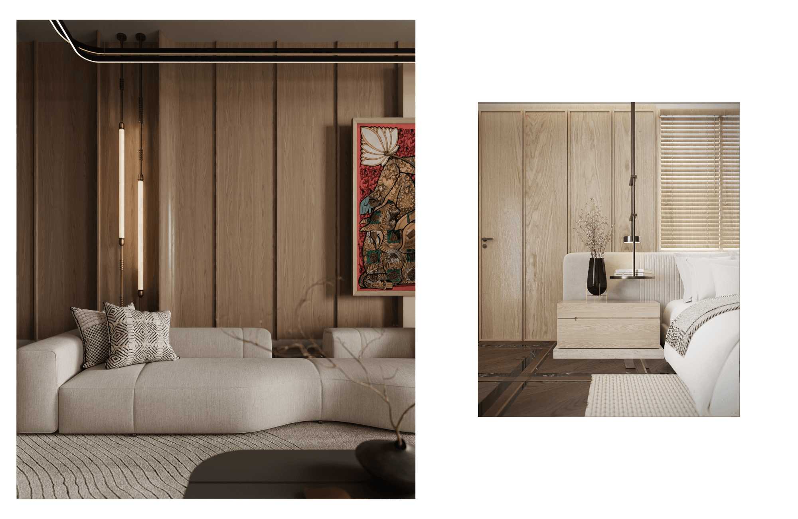
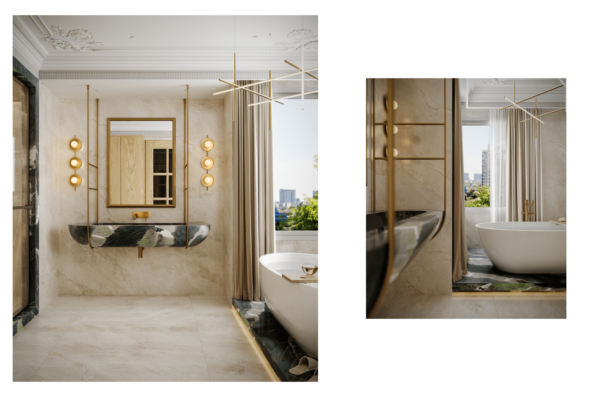
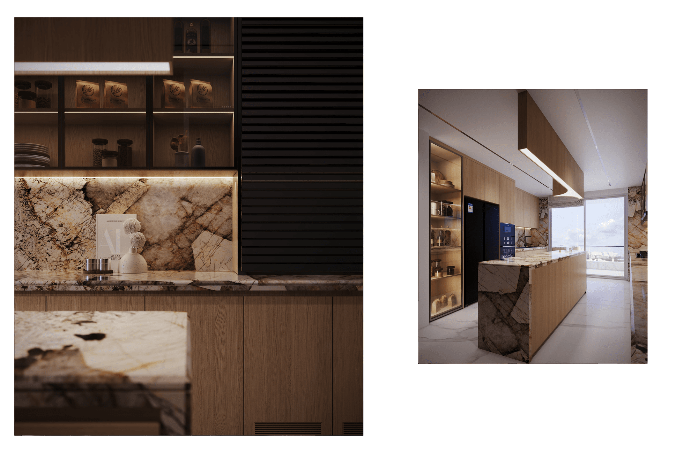

Apartments, villas, builder floors
Pentagram Expert
Luxury interior design studio in Gurgaon
Pentagram Expert is a Gurgaon-based interior design firm creating refined residential, commercial, and hospitality spaces across Delhi NCR. Our studio brings together spatial planning, material intelligence, furniture direction, lighting, and execution support to craft interiors that feel composed, personal, and built for everyday living.
We believe the best interiors are not simply decorated. They are resolved. Each project is shaped through proportion, circulation, function, finishes, and a clear design language so the final space feels luxurious without losing warmth, comfort, or practicality.
From premium apartments and villas to workspaces and selective hospitality briefs, the studio approaches every site with disciplined detailing, close client collaboration, and a commitment to time-bound delivery.

Studio note
Quiet luxury, sharper planning, and a calm hand at every stage.
Concept through handover
Quiet, premium, and personal

About Pentagram
Who We Are
Pentagram Expert is a multidisciplinary interior design studio for clients who want their homes and workspaces to feel considered from the first layout to the final object placed in the room. Our work is rooted in elegant planning, calm palettes, crafted details, and an understanding of how people actually live.

01
An Experienced Interior Design Firm
Our studio has grown through residential interiors, turnkey execution, renovation planning, furniture selection, and styling for clients across Gurgaon and Delhi NCR. We combine creative direction with practical site knowledge so design intent can move smoothly into execution.
Every project begins with a sharp reading of the brief: family routines, storage needs, entertaining patterns, light, privacy, budget, and timelines. From there, the design develops as a complete environment rather than a collection of isolated rooms.

02
What We Do
Pentagram Expert offers high-end interior design, space planning, furniture direction, decor styling, and turnkey coordination for apartments, villas, builder floors, offices, and select hospitality spaces. The studio works across concept, drawings, materials, procurement, vendor coordination, and final styling.
Our aim is to create interiors that are elegant, functional, and deeply usable. Whether the brief calls for a full home transformation or a precise renovation, we align every decision around quality, clarity, and a finished space that feels complete.

03
Why Choose Us?
Clients choose Pentagram Expert for a design process that is collaborative, transparent, and attentive to detail. Our team studies the available space, listens closely to the client, and builds a design direction that balances aspiration with the realities of site execution.
From subtle luxury to highly specific themes, we help clients create a distinct style without crowding the room. The result is a space that looks refined, works hard, and stays meaningful beyond the day it is handed over.